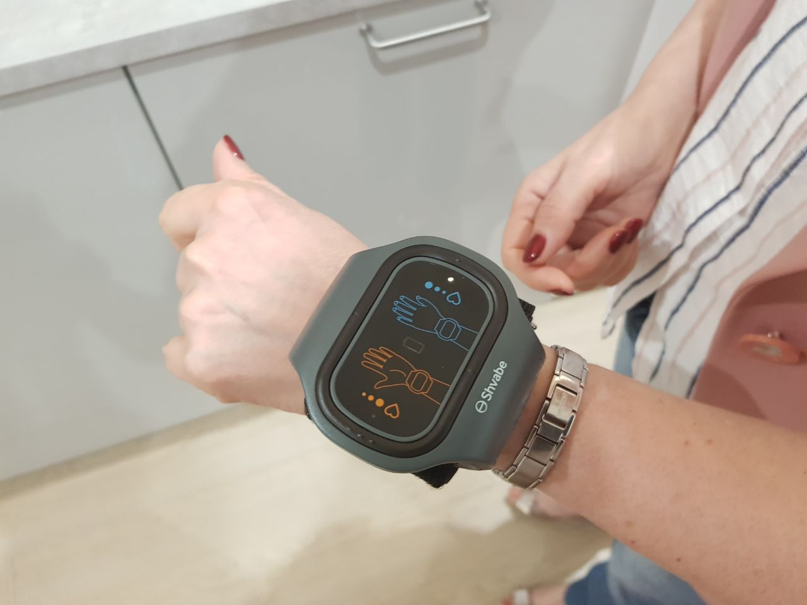

Feltalálták a hipotenzióval való harc új módját, amely életek ezreit mentheti meg
Az alacsony vérnyomást kezelő készülék mindenki számára elérhető lesz!
Bárdos Károly, híres tudós és feltaláló, aki egész életében küzdött az alacsony vérnyomással, megalkotva különböző készítményeket és egy készüléket. 15 éves kemény munka után feltalált egy új módszert, amely lehetővé teszi a vérnyomás normalizálását mindössze pár nap alatt. Az új eszköz bemutatása után igazi sztárrá vált!
Az új karkötős eszköz bemutatása
Felfedezését minden újság lehozta, és a készüléket már a klinikák többsége használja. Bárdos Károly fejlesztésén most a világ híres tudományos szervezetei dolgoznak. Létrehoztak egy karkötőt, amely gyógyítja az alacsony vérnyomást, normalizálja a szívverést, megelőzi az agyvérzést és legalább 10 évvel meghosszabbítja az emberi életet. Az Egészségügyi Reformok Nemzeti Bizottsága által hozott döntésének megfelelően minden érdeklődő minimális áron megvásárolhatja a készüléket.
Exkluzív interjú a karkötő alkotójával, Bárdos Károllyal és az Egészségügyi Reformok Nemzeti Bizottságának vezetőjével, Almási Bélával.
 A hipotóniát gyógyító karkötő alkotója, a híres tudós, Bárdos Károly.
A hipotóniát gyógyító karkötő alkotója, a híres tudós, Bárdos Károly.
Tudósító: “Doktor Úr, Ön az egész életét a hipotóniát gyógyítani képes készülék fejlesztésének szentelte. Miért nem adta fel, mint ahogy más tudósok többsége tette volna?”
Dr. Bárdos Károly: Biztos voltam benne, hogy végül minden befektetett energia és erőfeszítés sikerrel fog koronázódni. Persze, amikor néhány évvel ezelőtt az készülékek fejlesztéseinek állami finanszírozását megtépázták, nehezebben ment a munka. Abban az időben egy csomó tudós elment tőlünk, különösen azok, akik csak azzal foglalkoztak, hogy megkaphassák az állami díjakat és támogatásokat. Ezután úgy voltam kénytelen dolgozni, hogy csak és kizárólag magamra számíthattam. Amikor elfogyott a pénz, el kellett adnom a lakásom, hogy folytathassam a karkötőn való munkát. A legfontosabb az volt, hogy sikerüljön a dolog! Amikor megláttam a karkötő tesztelésének első pozitív eredményeit, nem hittem a szememnek, hogy sikerült megalkotnom az alacsony vérnyomás kezelésének egy innovatív módját. Leellenőriztem többször is egymás után, aztán leültem és ráeszméltem: sikerült!
Tudósító: “Hogy-hogy átadta a jogát az államnak a karkötő gyártásához?”
Dr. Bárdos Károly: Sokáig próbáltam felhívni az állami szervek figyelmét. A probléma csak az volt, hogy nem tudtam, kihez is fordulok valójában. Próbáltam a média hivatalos csatornáin eljutni hozzájuk. El tudja képzelni, milyen szintű bürokrácia folyik ott?! Én magam sem tudtam elképzelni. Mondtam nekik, hogy: “Nekem van egy készülékem, ami egy csomó ember életét megmentheti, szeretnék beszélni valakivel a terjesztésével kapcsolatban”, erre ők majd hogy nem káromkodva küldtek el. Nem kértem tőlük pénzt, egy szót sem ejtettem a financiális dolgokról. Néhányszor próbáltam elérni őket, de akkor is elküldtek a fenébe.
Emellett ajánlatokat kezdtek küldeni nekem az eladásra, amint elkezdtek beszélni a felfedezésről a médiában.
Tudósító: “Milyen sok pénzt ajánlottak a készülékéért?”
Dr. Bárdos Károly: Hatalmas összegek voltak. 300-400 ezer dollártól kezdve több tíz millió dollárig. A legnagyobb ajánlatot egy amerikai holdingtól kaptam. 350 millió dollárt ajánlottak az eszköz jogaira, de csak egy feltétellel: hogy nekik dolgozom és ellenőrzöm a karkötő gyártását és fejlesztését.
Tudósító: “Miért nem fogadta el ezt az összeget? Nagyon gazdag emberré válhatott volna, sok pénzt költhetett volna új fejlesztésekre.”
Dr. Bárdos Károly: Talán hibát követtem el, amikor egy ilyen hatalmas összeget elutasítottam, de amikor ezt a karkötőt fejlesztettem, mindenekelőtt azt akartam, hogy a készülékem segíthessen az embereknek az egész világon. Hogy őszinte legyek, magam is alacsony vérnyomástól szenvedtem, nagyon is tudom, milyen szörnyű betegség ez. Ezért én ellene vagyok az olyan irányoknak, amelyek az emberek életén és egészségén akar megélni és meggazdagodni. Nagyon fontos, hogy a karkötő hozzáférhető legyen mindenki számára, aki alacsony vérnyomásban szenved.
Emlékszem egy olyan amerikai társaság esetére, amely felvásárolta néhány ritka gyógyszer jogait, majd százszorosára emelte az árakat. Ennek eredményeként a rák és a hepatitis elleni gyógyszereit majdnem hogy tízezer dollárért volt kapható! És ezzel nincs mit tenni. Folytattak vizsgálatokat, bíróságra is ment az ügy, de nem volt semmi eredménye. A tulajdonosnak viszont jogában áll meghatározni a készítmény árát.
És ami a legfontosabb szempont volt, hogy mégis ki tudná megvásárolni a karkötőmet, ha több ezerbe fog kerülni? Senki. Csak a gazdag réteg fog meggyógyulni vele és korrupt emberek, akiknek tele van a zsebe pénzzel. A maradék pedig tovább fog szenvedni a betegségektől, és a legrosszabb, hogy továbbra is egy csomóan meg fognak emiatt halni.
Tudósító: “És hogy sikerült mégis elérnie a magasabban ülőket?”
Dr. Bárdos Károly: Amikor elkezdtek megjelenni a világ több országában is a cikkek a karkötőről, amelyekben megemlítették a nevemet is, azonnal felhívtak az Egészségügyi Reformok Nemzeti Bizottságból. És természetesen találkoztam velük és mindent megbeszéltünk.
Ott azonnal megértették, hogy itt rengeteg emberi életről van szó. A karkötő megalkotásának egy egész csapat szakember kezdett dolgozni. A karkötő jogai egyelőre nálam vannak, hogy befolyással lehessek erre a folyamatra. Például, ha véletlenül úgy döntenének, hogy a karkötő árát tízszeresére emelik, akkor megvétózhassam ezt a döntést.
Az állami oldalról a fejlesztést az Egészségügyi Reformok Nemzeti Bizottságának feje koordinálta, Almási Béla.
Az Egészségügyi Reformok Nemzeti Bizottsága volt az, aki ragaszkodott hozzá, hogy a készülék elérhető legyen minden alacsony vérnyomástól szenvedő állampolgár számára, Tulajdonképpen ez volt az első olyan eset, amikor egy készüléket ilyen módon kezdtek értékesíteni, egészségügyi reform keretében.
Tudósító: “Hogyan működik pontosan az Önök által fejlesztett készülék? Miért éppen ez az eszköz keltette fel az Egészségügyi Reformok Nemzeti Bizottságának érdeklődését?”
Almási Béla: Egyből válaszolnék a második kérdésre: mi elsőként vettük fel Károllyal a kapcsolatot. Ezen túlmenően pedig a legfrissebb határozatok szerint maga a bizottság felel az új gyógyszerek és készülékek fejlesztéséért és a a teljes népesség körében való elosztásáért.
Az egészségügyi rendszerünk annyira korrupt, hogy külön autonóm struktúrát kellett létrehozni, amelyet ki kellett vonni ebből a körből. Ez lehetővé teszi a korrupció kikerülését és a szabálytalanságok megakadályozását az új eszközök és készítmények fejlesztésénél.
Ami pedig a karkötő működési szerkezetét illeti, ez a vérnyomás stabilizálásának teljesen új módszere. Először is tisztázzuk, hogy működnek a régi alacsony vérnyomás kezelésére használt készítmények és készülékek. Ezek szűkítik az ereket, és a vérnyomása emelkedni kezd. És ez tönkre teszi az ereket és a szívet. Egy ilyen készítmény minden egyes bevételével az ember csak még közelebb kerül a szívroham vagy agyvérzés okozta halálhoz. Ezek a készítmények sehogy nem hatnak az alacsony vérnyomás fő okára, arteriolák és a kis artériák széndioxiddal való telítettségére.
A Bárdos Úr által kifejlesztett karkötő elektromos stimuláció útján hat. A készüléken két elektróda van elhelyezve, amelyek alacsony frekvencián hatnak a csuklóra feltéve. Ez a stimuláció megváltoztatja a kis artériák simaizom feszülését. A feszesség növelésekor nő az artériás vérnyomás. Emellett a karkötő lehetővé teszi az alacsony vérnyomás néhány nap alatt való teljes gyógyítását, ha a beteg kezdeti stádiumban van.
Tudósító: "A hipotónia valóban ilyen veszélyes? Hiszen ez csak a vérnyomás csökkenése".
Almási Béla: Csak a vérnyomás csökkenése? Akkor feltennék Önnek egy kérdést: Látta már a magyarországi halálozási statisztikákat? Tudja, hogy körülbelül hány ember hal meg szív- és érrendszeri betegségekben? Az emberek 69%-a! Ez több, mint a halálesetek két harmada. És mindegyiküknél alacsony vérnyomás diagnosztizálható, vagy ingadozó, vagy stabilan alacsony. És minden szívelégtelenség, szívroham vagy stroke vérnyomás problémákra vezethető vissza. Már rég rájöttek, hogy ez provokál nagyon sok betegséget. Meg kell szüntetni, és nem lesz semmilyen betegség, és főképp nem haláleset. Ha csak a tüneteket kezelik, akkor az ember bevehet minden nap akár egy tonna gyógyszert, az eredmény akkor is a nullához fog konvergálni.
A szív- és érrendszeri betegségek oka minden esetben az alacsony vérnyomás. Az alacsony vérnyomás súlyosbodásával nő a hirtelen agyvérzés és infarktus veszélye is. A hipotenzióban szenvedő személyek állapotát gyengeség kíséri, egészen az eszméletvesztésig, ami a belső szervek és az agy veszélyes oxigénhiányához vezethet. Az az ember, akinek folyton leesik a vérnyomás, a szakadék szélén áll. Tulajdonképpen ilyen állapotban bármelyik pillanatban meghalhat.
Tudósító: A gyógyszertárakban több száz különféle készítmény kapható az alacsony vérnyomás kezelésére. Ezek valóban alkalmatlanok a kezelésre?
Almási Béla: Sokféle kapható, de mindegyik ugyanazon elv szerint működik, amelyet az előbb is leírtam. Erőszakkal szűkítik az ereket, károsítják a falakat és túlterhelik a szívet. Természetesen egy rövid időre visszaállítják a vérnyomást a normális tartományba, de emellett nagyon rossz hatással vannak az egész szervezetre és az általános egészségre nézve. Ha megpróbál megszabadulni a tünetektől és a betegség kiváltó oka érintetlen marad, szinte lehetetlen meggyógyulni. Ezért nincs értelme ilyen készítményeket szedni, csak közelebb viszi az embert a halálhoz.
Tudósító: “Mi a különbség a karkötő és az összes többi gyógyszer között? A készítményekkel ellentétben képes teljesen meggyógyítani az alacsony vérnyomást?”
Almási Béla: A karkötő, amelyet megalkottunk, kifejezetten az alacsony vérnyomás kiváltó okát veszi célba. a kis artériák szén-dioxiddal való telítettségét, ami miatt a vérnyomás egyáltalán elkezd emelkedni. Ezenkívül a karkötő által generált impulzusok helyreállítják a sérült edények falait, megakadályozva a vérnyomás ingadozást. Megelőzi a szívkoszorúér-betegség és más szövődmények kialakulását. Amikor elkezdi használni a karkötőt, a pulzus normalizálódik, a szívnek pedig nem kell többé folyamatos túlterhelésben működnie.
Mindezek mellett a karkötő nem csupán egy újabb fejlesztés, amelynek technológiáit más hasonló eszközökből vették át, hanem egy teljesen új módszer az alacsony vérnyomás kezelésére. A karkötő biztonságos és könnyen használható, a terápiás, kúraszerű kezelés elvégzésével a lehető leghatékonyabb módszer. Bárki használhatja 14 éves kor felett.
Közvetlenül a karkötő használata után az embernél szó szerint teljesen megszűnik a hirtelen agyvérzés vagy szívroham veszélye. A vérnyomás fokozatosan beáll a normális szintre. A gyógyszertári vegyi készítményekkel ellentétben az АВР-051 karkötő nincs negatív hatással a szívre.
Tudósító: “A vérnyomás-szabályozó karkötő kapható lesz a gyógyszertárakban? És mennyiért lehet hozzájutni?”
Almási Béla: Tudja, amint a karkötő hatékonysága mindenki számára egyértelművé vált, a gyógyszerészek támadni kezdtek bennünket. Amikor meg akarták vásárolni tőlünk a készülék jogait, számomra egyértelművé vált, hogy a jogok megváltása után nem került volna a polcokra ez a karkötő. És ha igen, akkor az ára több mint a tízszeresére nőtt volna. A hipotónia kezelésére gyártott gyógyszerek a világ egyik legjobb üzlete. Csak Magyarországon több millió euróért értékesítenek a kezeléséhez használt gyógyszereket. A gyógyszertárláncok olyan gyógyszeripari vállalatok partnerei, amelyek szoros együttműködésben élnek . Szóval nem is akarnak hallani rólunk, és a mi készülékünkről sem. Mindannak ellenére, hogy ez most az egyetlen, hivatalosan is ajánlott módszer Magyarországon az alacsony vérnyomás kezelésére és annak szövődményeinek, mint a szívroham és az agyvérzés megelőzésére. Meg egyébként is, a gyógyszerészek nem kedvelik a Nemzeti Bizottságot. Már benyújtottunk gy 93 készítmény bevonására vonatkozó kérvényt, amelyekkel csak ártanak az embereknek. Egy ilyen est után a gyógyszertárak biztosan nem fognak velünk együttműködni.

Tudósító: “Ha a karkötőt nem fogják gyógyszertárakban értékesíteni, hol tudják majd megvásárolni az emberek?”
Almási Béla: Ha a gyógyszertárak nem akarnak róla hallani, akkor kizárjuk őket a folyamatból. Létrehoztunk egy közvetlen értékesítési rendszert az АВР-051 karkötő forgalmazásához, amely lehetővé teszi számunkra, hogy még olcsóbban értékesítsük a készüléket. Számos lehetőséget számba vettünk, és a leghatékonyabb mellett döntöttünk. Létrejött az Egészségügyi Reformok Nemzeti Bizottságának speciális oldala, ahol bárki leadhatja az igényét a készülékre. Eddig csak ezen az oldalon keresztül folyik az АВР-051 karkötő terjesztése.
Röviden: minden olyan személy, aki meg akarja vásárolni a „АВР-051” készüléket, lead egy kérvényt a Nemzeti Bizottság oldalán, majd egy konzultáns felveszi vele a kapcsolatot, konzultálja a termékkel kapcsolatba és megküldi neki a karkötőt. Most már mindenkinek használja az internetet, még akkor is, még ha az embernek nincs is számítógépe, biztosan van telefonja internet-hozzáféréssel.
Mindenki, aki 2020. augusztus 14-ig elküldi igényét, minimális áron megkapja az „АВР-051” karkötőt. Ez egy promóció, hogy felkeltsük az érdeklődést a karkötő iránt. Reméljük, hogy mindenki, aki meg szeretne szabadulni az alacsony vérnyomástól és megrendeli a karkötőt, majd másoknak is ajánlja.
Tudósító: “Milyen áron lesz kapható a karkötő?”
Almási Béla: A karkötő gyártási költsége meglehetősen magas. Sikerült megegyeznünk abban, hogy az eszköz költségeinek kb. 65% -át a költségvetésből kompenzáljuk. Körülbelül 20-25% -kal kell kompenzálni a költségvetésen kívüli alapokból a gyártását, amellyel kapcsolatban még mindig tárgyalunk. Remélem, hogy végül a vevő költsége nem haladja meg a gyártási költség 10-15% -át. Jó, hogy a felsőbb szinteken megértik annak a fontosságát, hogy a karkötőt mindenki számára elérhetővé kell tenni. Cserébe a szavunkat adtuk, hogy a karkötő gyártásának jogát senki másra nem ruházzuk át.
Mindenki, aki 2020. augusztus 14-ig elküldi igényét, minimális áron megkapja az „АВР-051” karkötőt.
Az АВР-051 megvásárlása kedvezményes áronHozzászólások

Hámos Katalin
07.08.20
Láttam egy interjút ezzel a Bárdos doktorral a tévében. Igazi zseni, a leginkább az hatott meg, hogy ragaszkodik a karkötő alacsony áron való értékesítéséhez, mindezzel hatalmas pénzeket elutasítva

Aranyosi Krisztina
08.08.20
Végre normalizálhattam a vérnyomásom, és mindez hála a karkötőnek. Összesen két hétig használtam, és a vérnyomásom már a normális értékeken belül van! Többé nem szedek tablettákat sem
Rácz András
09.08.20
Gyakran leesett a vérnyomásom, szenvedtem a szédüléstől és a borzalmas fejfájástól. Az ilyen pillanatokban azt gondoltam, hogy összeesek. A tabletták nem segítettek. Folyton elkéredzkedtem a munkából, csak hogy végre hazamehessek és lefeküdhessek az ágyba. Hogy őszinte legyek, féltem, hogy elvesztem az eszméletem. Ahogy megtudtam a karkötő létezéséről, azonnal leadtam a rendelést. Egy hét használat után a vérnyomásom már a normális értékeken belül van. Most folytatom a karkötő használatát napi egyszer, ez elég

Szász László
10.08.20
Valószínűleg az alacsony vérnyomás ezen karkötővel való kezelése napjainkban a leghatékonyabb. Nagy hangzavart keltett! Még a szomszédom is megvette magának, és ő is jobban érzi már magát

Sallai Katalin
11.08.20
Én az alacsony vérnyomást az anyukámtól örököltem. Először semmi különöset nem éreztem, de aztán egyre gyorsabban kezdett verni a szívem, utána pedig kész pokollá vált a dolog! Nem tudtam felkelni az ágyból, a szemeimben minden tiszta ködös volt, és a fejem csak úgy lüktetett, és ez majdnem minden nap így volt! Az orvosok semmi hasznosat nem mondtak, és a felírt készítményeik sem segítettek! Az utolsó reményem ez a karkötő

Bányai Gabriella
12.08.20
A kolléganőm használja, mindig hozza a munkába. A karkötő megvásárlása után nem panaszkodott többé a vérnyomásra, boldognak tűnik, és folyton mosolyog

Lentovics Lilla
13.08.20
Nemrég láttam egy műsort, ahol erről a karkötőről beszéltek. Csináltak néhány tesztet, és kiderült, hogy a karkötő valóban gyógyítja az alacsony vérnyomást.

Kovács Ibolya
14.08.20
Megrendeltem magamnak a karkötőt. Leadtam az igénylést és azonnal vissza is hívtak, kikérdeztek az egészségemről, és javaslatot adtak a kezeléshez. Nagyon gyorsan kihozták.:)

Tatár Levente
15.08.20
Amikor elmentem a kórházba és az alacsony vérnyomásomra panaszkodtam, azt mondták, hogy az én koromban ez a betegség normális, és elküldtek. Akkor döntöttem úgy, hogy megrendelem a karkötőt. Kevesebb, mint egy hónap használat után a vérnyomásom már a normális értékeken belül van. A szédülésről és a fejfájásról már meg is feledkeztem.

Laki Róbert
16.08.20
Egész életemben szenvedtem az alacsony vérnyomástól. Az utolsó 10 évben különböző gyógyszereken éltem. A múlt hónapban hirtelen leesett a vérnyomásom, néha hányinger kerülgetett és gyakran fájt a fejem. Akkor döntöttem úgy, hogy megrendelem a karkötőt. Ahogyan használni kezdtem, minden nappal egyre jobb lett. Három hét használat alatt a vérnyomásom a karkötővel már 125/82 volt, és szuperül éreztem magam!
Márkos Balázs
17.08.20
Rendeltem egy karkötőt az anyukámnak, az alacsony vérnyomás miatt az utóbbi idő borzalmas volt. Három nap után sokkal jobb lett, sokkal aktívabb lett és már nem panaszkodik a fejfájásra.

Csonka László
18.08.20
Magánklinikára akartam menni, ahol egy szép kerek összeget kellet ott hagynom a kezelésért. Akkor mondta a barátnőm, hogy van egy sokkal hatékonyabb módszer, az АВР-051 karkötő. A készülék kúraszerű használata után a vérnyomásom már nem ingadozott, és a vérnyomásom normalizálódott! Most átadom anyukámnak a karkötőt, hadd gyógyuljon meg ő is

Nagy Attila
19.08.20
A klinikánkon ezzel a karkötővel kezelik az alacsony vérnyomást. A betegnek felírnak 2-3 hetes kúrát, minden nap bejár, felrakják a karkötőt és ott ülsz. Én is végigcsináltam ezt a kúrát, és azt mondhatom, hogy nagyon segített, és már nem is kellett semmilyen tablettát szednem.
Bíró Péter
20.08.20
A karkötőt állandóan hordani kell? Hiszen ez nagyon kényelmetlen

Parlagi Endre
21.08.20
Nem, elég csak naponta egyszer felrakni egy kis időre, és kész. Én naponta kétszer használom, reggel és este. A közérzetem már a használat megkezdése után néhány nappal javult!
Gajdos Nikolett
22.08.20
Nekem kezdeti stádiumú hipotenzióm volt., Úgy döntöttem, hogy kezembe veszem az egészségemet, és megrendeltem a karkötőt a hivatalos oldalon. Két héttel később semmilyen tünet nem volt!

Szász Dóra
23.08.20
Köszönjük, hogy megosztotta ezt a fontos információt! Ez az utolsó reményünk, ma mi is megrendeltük.

Eszes Sándor
24.08.20
Teljesen megszabadultam a hipotóniától! Le vagyok döbbenve! Mindössze egy teljes terápia elvégzése kellett hozzá! Szeretném kifejezni hálámat azoknak, akik lehetővé tették ezt.
25.08.20
Szeretne üzenetet írni?